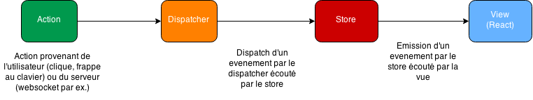

24 mars 2016 - by Galilée
Sommaire
- Présentation
- React Component
- Environnement de dev.
- Architecture Flux
1 - Présentation
- Librairie pour l'UI seulement
- Gère les changements d'état du DOM
- Virtualisation du DOM
- SEO : rendu html côté serveur (nodejs / php)
- React Native : Learn One Write everywhere
2 - React component (1/5)
- State, Props et render()
- Cycle de vie
- Form
- JSX
2 - React component (2/5)
State, Props et render()
- State: Interne au composant. Modifié via setState(newState)
- Props : Défini par le parent. Immutable.
- render() : Fonction pure
- getInitialState() : Appelé une fois avant que le composant soit "monté"
- getDefaultProps() : Idem getInitialState. La valeur est partagé entre toutes les instances
- propTypes : valide les Props passés au composant
2 - React component (3/5)
Cycle de vie
- componentWillMount
- componentDidMount
- componentWillReceiveProps
- shouldComponentUpdate
- componentWillUpdate
- componentDidUpdate
- componentWillUnmount
2 - React component (4/5)
Form
- Textarea : le texte est passé par l'attribut value et non en tant qu'enfant du tag
- Ecouter les changement avec onChange (checkbox, input, select)
- input "controllé : attribute "value" non modifiable directement par l'utilisateur. Passer par onChange
- input "controllé": sans l'attribute "value". Peux avoir l'attribut "defaultValue"
- defaultValue est utilisé seulement lors du premier rendu du composant !
https://facebook.github.io/react/docs/forms.html#controlled-components
2 - React component (5/5)
JSX
- Sans JSX :
var child1 = React.createElement('li', null, 'First Text Content'); var child2 = React.createElement('li', null, 'Second Text Content'); var root = React.createElement('ul', { className: 'my-list' }, child1, child2); ReactDOM.render(root, document.getElementById('example')); - Avec JX :
var MyComponent = React.creatClass({/*...*/}); var myElement =; ReactDOM.render(myElement, document.getElementById('example')); - Ne pas utiliser class ou for (mots réservés), mais className et htmlFor.
3 - Environnement de dev
- Webpack
- Babel
- Webpack Dev Server
- React hot loader
- Tests unitaires Mocha / Karma
- TypeScript
4 - Architecture Flux
- Flux de données unidirectionnel
- Immutabilité
- Redux
4 - Architecture Flux
Flux de données unidirectionnel
- les actions, qu'elles proviennent du serveur ou d'une interaction utilisateur ;
- le dispatcher dans lequel sont envoyées les actions que ce dernier transmet à qui veut, un peu comme un EventEmitter global ;
- les stores, qui sont l'équivalent du model de l'architecture MVC, ils contiennent les données, et réagissent aux actions que le dispatcher leur transmet ;
- les views, qui s'occupent du rendu des données dans le DOM, et de lancer des actions lorsque l'utilisateur effectue certaines actions.

4 - Architecture Flux
Redux : 3 principes
- Single source of truth
- State is read-only
- Changes are made with pure functions
- Single source of truth
- State is read-only
- Changes are made with pure functions
4 - Architecture Flux
Redux : actions
//Action
{
type: ADD_TODO,
text: 'Build my first Redux app'
}
// Action creator
function addTodo(text) {
return {
type: ADD_TODO,
text
}
}
//Dispatcher
dispatch(addTodo(text))
4 - Architecture Flux
Redux: Reducer
function todoApp(state = initialState, action) {
switch (action.type) {
case SET_VISIBILITY_FILTER:
return Object.assign({}, state, {
visibilityFilter: action.filter
})
default:
return state
}
}
4 - Architecture Flux
Redux : Store
Le Store est un objet qui rassemble les actions et les reducers
import { createStore } from 'redux'
import todoReducer from './reducers'
let store = createStore(todoReducer, initialState)
- store.getState()
- store.dispatch(action)
- store.subscribe(callback)